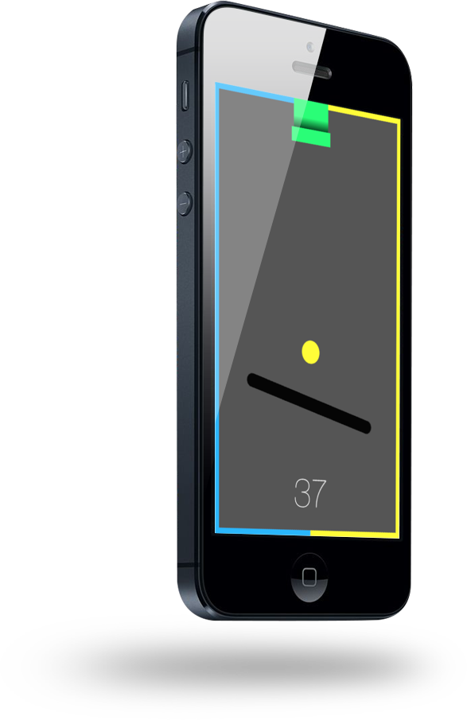

|  |
Deflector is a game made with Swift. It uses the SpriteKit 2D framework. The objective of the game is to use the one of the three different control modes (tap, hold, or drag) to spin the bar in order to bounce falling balls to the right or left side. We started work on Deflector in November of 2014, and thanks to fast prototyping and swift (pun intended) debugging, we were able to get it out the door and into the App Store by January 2015. Although this was a 100% in-house project with no client, we think this displays the execution skill and design expertise of our team. Deflector conforms to a more minimal style. Unfortunately, because Deflector is currently published, we are unable to make it open-source. That being said, you can download it here. |
 Sebastian is an experienced iOS and Web developer, the backing force behind Deflector, the sole creator of this website, and the cofounder of Isometric Studios. He dabbles in design and jQuery animation, but his main focus is iOS apps and games. His personal website can be found here. |
 Josh is the other cofounder of Isometric Studios, an avid iOS designer and developer. Josh specializes in the SpriteKit framework, the environment in which Deflector was created, and he is the co-creator of Deflector. His personal website can be found here. |